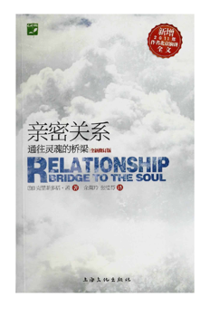
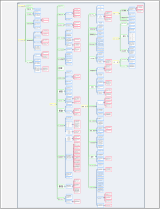

- 我们带着所有的情感、幻想和无数没被满足的需求,展开寻觅之旅, 希望找到一个为了我们可以抛弃全世界, 而且永远把我们放在第一位的理想情人。

- 孩童时期需求没有得到满足时, 我们心中所形成的看待外在世界的态度, 对我们有很大的影响。
- 归属感
- 被重视
- 每个吸引我的女孩都拥有一项或两项我梦中情人的特质,但很少具有三项以上的, 符合所有特质的更是一个都没有。
- 那就是选定一个最符合条件的候选人, 然后进行改造计划, 让她变得和我的梦中情人一样。

- 期望与要求可分为明说和暗示两种方式。
暗示的方式应用十分广泛- 一、你希望伴侣满足你的需求, 但又不想表现出软弱且需求不满的样子;
- 二、你幻想你的理想情人会读心术, 能够知道你的每个想法。
- 期望就是通往地狱之路, 因为期望会把接受和让人自由等充满爱意的感觉挡在门外。
- 期望的目的是要让需求得到满足
- 我们感到内心缺乏爱(如果我们需要某样东西, 一定是因为我们自己没有)
- 其二, 如果没有某个人——例如父母——来满足我们的需求, 我们就会觉得这个世界没有足够的爱。
- 我们要求别人来爱我们, 那就是否认我们自己心中有足够的爱。
觉得不被爱, 必定会让我们产生一些缺乏爱的信念, 如我们不值得被爱,或我们并不可爱……于是, 即使伴侣向我们保证我们是可爱的, 我们内心却有一个更强大的声音说我们并不可爱

- 一方面,你希望伴侣让你快乐,而让对方感到压力;
- 如果对别人取悦我们的能力抱以太大的期望, 那么失望将会是必然的结果。
- 了解自己的期望及其背后的需求, 是一种后天学来的技巧。
通常我们只会意识到自己希望伴侣做些什么或改变什么,却不会察觉自己深埋在潜意识里的需求
- 另一方面, 你自己也承受着压力,因为你也必须做对方的“一切”。
- 当放弃一项需求时, 我们便把心中原本被需求占据的空间释放出来;而宇宙中是不容许有空洞存在的, 所以我们心中的空间将会被爱所填满。
- 在亲密关系“月晕现象”的中心,存在着真爱之光。
这种力量,才是人与人互相吸引的真正原因。
每一段刚开始的亲密关系, 都蕴藏着无限的可能性: 一开始的心动可能转为真正的热情; 一开始的欢乐可能成为真正的喜悦; 而伴侣间的笑声,提供了调剂生活的幽默。
在这一切的背后,蕴涵着纯真的灵魂关系。- 学着接纳你的伴侣(但并不是滥用忍耐力), 也能让你学习到接纳本来的自我,而不再认为你需要些什么来让自己变得完整。
学会放手和接纳之后,你一定会明白, 你原本就是一个完整的个体,所需要的一切, 都存在于你心中。

- 在我们的需求没有得到满足, 对伴侣的改造计划又全都不起作用的时候幻灭就到来了。

- 四种主要的偏差行为:
- 引起注意(看看我!看看我!)
- 权力斗争(我不想做,你不能逼我!)
- 报复心理(你伤害我多少,我也要伤害你多少。)
- 自我放逐(努力有什么用呢?反正我一点也不重要。)
- 偏差行为的目的往往是要控制伴侣, 并借此避免梦想幻灭。

- 随着沮丧感愈来愈重, 权力斗争慢慢演变成双方争夺亲密关系主控权的战斗,双方都努力地想要改变对方的想法、话语和行为。
- 一、用蛮力或恐吓强迫伴侣改变生活习惯、说话方式、穿衣风格、头发长度等;
- 二、学习圣人般的忍耐力;
- 三、甩掉现任情人另觅新欢。

- 孩童的两大需求是归属感和确认自己的重要性。
若是这两大需求不能得到满足,我们会很痛苦, 甚至严重到心碎的程度。 - 伴侣只让我发觉到痛苦的存在。
其实痛苦存在我心中已经很久了, 只不过我不愿去感受。让我惊讶的是, 我一直在否认痛苦的存在, 却一点都没有察觉到自己在这么做。 - 在分享过一段特别亲密的时光之后, 情侣们往往最容易吵架。当两人觉得特别亲近, 一切都特别美好, 幽默感和温柔也比平时要多的时候, 好像这些亲密时刻经历到的爱, 让我们有力量去不自觉地唤醒过去的伤痛, 好让它们现在得到当时无法得到的爱的关注。
- 但是, 想要疗伤的企图却往往导致激烈争执或变成亲密关系危机的导因。
- 当我们还小的时候, 创伤可能让我们觉得难以承受。
但现在我们长大了, 或许已拥有从不同的角度来面对它的能力。也许,现在痛苦已经不像从前那样难以承受了。- 用较成熟、理性的态度来处理权力斗争, 不只能让你面对过去的伤痛, 也能让你不再受其负面影响。这些负面影响, 也就是自我局限的信念。

- 过去的创伤并不会随时间逝去。
每个自我局限的信念,都来自过去的创伤。- 许多想法从小时候起,就一直存在我们脑子里。
你的脑袋就像一台可以永远录音的录音机, 不断重复播放相同的想法。
想法是信念的主要成分。

- 过去的创伤如果没有愈合, 我们就会对自己产生负面的想法; 但如果我们用健康的方式把伤痛处理好, 我们的信念也会随之改变。
- 我们都依据对自己的想法而活。
- 所有源自未愈伤口的信念都是自我局限的。
既然我们对自己的信念与过去的创伤关系密不可分,而过去的事早已记不清,更不可能改变, 那我们要如何才能挣脱束缚呢? - 亲密关系让我们有机会重新面对并治好旧伤, 从而改变衍生自伤痛的错误想法。
 原生家庭的影响
原生家庭的影响
- 在一段亲密关系中,伴侣之间愈亲密, 分享就愈多, 我们就愈可能发现平时不易察觉的旧伤。
- 妥协也有两面
- 其一, 妥协并不能完全满足任何一方, 因为两个人都觉得没有得到真正想要的。
- 其二, 更严重的是,问题真正的原因没有得到处理。
- 许多夫妻也是如此,情愿忍受不愉快的权力斗争,也不愿面对争吵背后的痛苦。
- 亲密关系中最大的问题便是我们面对痛苦的态度

- 我们对伴侣发怒的原因有两个。第一,怒气能够麻痹我们心中的痛,压过所有的情绪,甚至能够麻痹身体的感觉。
- 生气的第二个好处,是能让对方有罪恶感, 这样一来,就能有效地控制对方的行为。
- 装作无辜的受害者, 能让对方觉得自己像个坏人, 而由于你并没有指控他们做错事, 你也同时剥夺了他们自卫的权利。

- 如果我能证明伴侣是错的,那么我就是对的。
觉得自己站在对的一方,就能抵消痛苦的感觉, 而怒气则能让我骄傲神气, 压过其他不愉快的感觉。- 不过,如果你希望拥有健康、美好的亲密关系, 你也许会考虑对自己的愤怒负责,充分地感受它,但不把怒气加在别人身上,这样你才能发现生气是为了逃避什么
- 如果你愿意面对自己所逃避的感觉——不论这令你多么不自在——你就能发掘埋藏在更深处的、平静而充满爱的感觉。
- 要做到这样, 必须有决心,我把这样的决心叫做“爱意”。

- 爱意的产生, 是由于灵魂在驱策我们去学习如何真心地爱自己和对方。
- 痛苦其实是一种转机, 能让我们成长并摆脱目前所受的限制
- 爱意则能让我们克制冲动, 用负责任的态度来处理我们心中的不快, 不致说出责怪或指责的话,而用了解、体谅的话来取代。这样我们便成长了。
- 就像身体在遇伤病的时候会尽力自疗一样, 心灵也是如此。
现在的亲密关系是治疗旧有的情绪伤痛的最佳环境。

- 我们必须不断提醒自己,我们看事情的角度, 只不过是千百种角度的其中一种, 而且没有哪个角度是完全正确的。

- 一般来说,只要正反方能尊重彼此的看法, 并接受彼此的意见, 那么亲密关系中的两极其实可以合作无间。
反方会发现问题,并把它提出来讨论, 正方则会在聆听之后,想出解决的方法。然后, 反方会挑出这个解决方案中的问题, 正方则在修正后提出可行性更高的方案。
两人会不断重复这些步骤, 直到找出最佳的解决方案为止。在这过程中, 你会发现反方变得愈来愈乐观, 而正方也变得愈来愈实际。
这样亲密关系便取得了和谐的平衡。

- 这个过程的关键是“进化”,也就是说, 权力斗争激烈的大战阶段, 其实能让我们的亲密关系向前推进, 达到更高层次的快乐和亲密。


- 真正有效的解决方案应该是, 两人都让心中的痛浮上台面, 然后用健康的方式来处理它。
- 意向是成功的关键。只要你明白了自己的意向,就能借由有效的沟通, 轻易找到解决之道。
- 有效沟通的八个纲要问题: 1.我想要什么? 2.有没有什么误会要先澄清的? 3.在这次冲突中,我所表达的情绪,有哪些是绝对真实的? 4.我或我伴侣的情绪,是不是似曾相识? 5.这种情绪是怎么来的? 6.我该怎么回应这种情绪? 7.情绪背后有哪些感觉? 8.我能不能用爱来回应这种感觉?
- 要一直专注在沟通的主要目的
其实,每个冲突都有完美、双赢的解决方式, 但是一开始可能不容易发现。
事实上, 每个问题的本身,都包含着自行解决的机制。
只要问题所唤醒的感觉得到了妥善的处理, 问题就会神奇地转化为一份礼物、人生经验, 或一个让生命更丰富的机会。
- 有没有什么误会要先澄清的?
会指控对方往往是由于太多的假设。一旦所有的事实都公开了, 你就能开始处理让事情恶化的真正原因。

能对自己的情绪百分之百负责,你说出的话, 就会是绝对的事实。如果做不到百分之百的负责,你就还是有可能责怪、批判对方,自以为是, 并且自我防卫。

你应该马上就感觉得到,现在感受的情绪, 已经存在你心中很久了。

信念是指由想法、图像和感觉所构成的东西。家庭也是你最早开始感受情绪的地方。
你心中无意识的部分在体验到某事时会产生反应,这种反应就是情绪。

一个很好的处理方式是, 心里有什么感觉就说出来,尽量不作保留, 也不抗拒。除了说出情绪的由来之外, 你还必须要说出情绪的强度、组成, 和它所造成的效应, 但要小心不要在过程中放纵了情绪。通常你在这么做的时候,伴侣会从旁支持。

化解了自己的情绪之后, 你往往会发现另一扇门, 一扇通往更广大事物的门。我称做“空虚感”的地带,它是我们开始追求完全的“自觉”时才会遇到的感觉。寂寞、无助、绝望、迷失等都是人类经验的一部分，但是这些感觉似乎是那么深远又无边无际, 以致我们好像十分害怕感受它们。
不要把无力感当做敌人, 而把它当做我们的一部分。 一旦选择面对自己最深层的感觉, 你就可以开始将恐惧转化为爱意。
一旦选择面对自己最深层的感觉, 你就可以开始将恐惧转化为爱意。
- 妻子就像我的镜子一样, 完美地反映出我内心的感觉。如果我感到痛苦, 我就会发现她也感到痛苦。
所以爱她就是爱我内心的痛苦,也就是爱我自己 - 如果无计可施,就选择臣服吧!

- 报复的倾向,在权力斗争刚开始的时候就会出现。你会刻意伤害对方,从而减轻自己的痛苦。
在报复的时候,你会得到一种冷冰冰的快感, 但这种行为很快就会让人上瘾。- 超脱自己的痛苦需要很大的努力, 但借着报复来转移注意力却很简单。
知道对方和自己一样痛苦,心里就会舒服一点。 - 在亲密关系中,察觉报复的迹象并选择改变, 是很重要的。
思考一下你和别人发展亲密关系的原因, 你就会了解,你的目的并不是要伤害任何人。 - 比较聪明的方法是,检查一下亲密关系中, 你有没有在哪些地方去刻意( 不管是自觉或不自觉)伤害伴侣。晚回家又不打电话, 跟尖酸批评或恶言相向一样算是报复的行为。你必须了解自己在报复时用了什么作为武器, 并且让伴侣知道。问问对方哪些话或行为会让他/她真正受到伤害, 然后保证以后会对自己的行为更加注意与负责。

- 我在亲密关系中学到的最宝贵的一课, 就是你非常有必要用全新的心态来面对亲密关系中浮现的痛苦。除了小时候受到的创伤以外, 我发现自己心中还有更深一层的痛——生而为人的痛。
这种痛似乎是由孤独感衍生而来的。 - 痛苦虽不能避免,要不要受苦却可以选择。
逃避痛苦、不愿面对的倾向, 只会延长我们所受的考验与苦难。- 如果能坦然面对痛苦而不抗拒, 那么痛苦就会转变为一份礼物,让我们更有自信,更相信自己,更坚强,更快乐, 更接近自己的灵魂,更了解彼此,等等。


- 有一件事是很确定的, 如果无法承认这些丑陋事物是你的一部分, 你就没办法去爱它们, 因为你无法爱跟你无关的事物。
- 你对待伴侣的方式事实上就是你对待自己的方式
- 你接下来的首要任务, 就是接受并整合自己不好的那一面, 停止争执并提供支持, 在伴侣有无力感时诚心地鼓励他/她, 并且在相处时保持明辨是非的态度。


- 如果你是把伴侣当做提供你个人满足的工具, 那么你现在就很可能会下一个结论, 认为你要不是选错了人, 就是爱的火花已经熄灭了——总而言之, 是该离开的时候了。
- 但如果你把亲密关系当做学习无条件的爱的途径,那么你的决心就能让你渡过“不可能的难关”, 而体验到更美好的快乐和亲密。

- 日常的例行事务、潜意识的习惯, 再加上逃避冲突的倾向, 经常企图在我们之间制造嫌隙。

- “受害者”是我能想到的词当中, 最适合解释为什么在旁观者看起来很容易解决的问题,却能让当局者身陷其中而走不出来。


- 左右为难的情形, 往往会把简单的选择变成峰回路转的戏剧情节, 这样当事人就会分心, 而看不出这种情形所造成的真正影响。
- 左右为难的情形会让受害者更深信自己是受害者, 也让其他人都害怕在生命中有所进展。
- 要突破左右为难的困境其实很简单。首先, 要选择真理。
还有就是要愿意接受两个选择中的任何一个, 或是两个都不选。- 这一点非常重要, 因为两难的境地往往会让你相信你就只有两个选择,再没有第三条路可以选, 但如果你愿意两个都不选,而且决心追寻真理, 你就可以从困境中解脱出来, 并发现无尽的可能性。

- 一个人对家庭的死忠会造成诸多限制
- 对家庭的死忠有许多表现方式, 包括你遵从的戒律、做出的牺牲、采取的信念、接受或拒绝的人,以及处理事情的应对方式等。
这些都是在你出生的家庭中形成的。 - 对家庭的死忠是这样形成的:借由模仿父母、兄弟姐妹, 或亲戚的言行来塑造自我, 进而在家庭中得到或好或坏的一席之地。
- 自由选择职业的那些人,往往跟家人处得比较好,也比较感激家人。
而那些依家人期望而选择职业的人, 对家人的感情则比较含糊不明。

- 小时候我们会扮演许多种牺牲者的角色来让自己觉得自己是好人, 因而抵消不断攻击我们的罪恶感。
- 你已经厌倦了牺牲的行为,而且不得不问自己, 在跟伴侣相处的这段时间里, 你到底有没有真正地做过你自己。
- 如果小时候你是“英雄”型的小孩——成绩优秀, 或把家里打扫得一尘不染,煮饭烧菜一手包办, 或是田径队的明星队员——那你长大以后, 还是会扮演英雄的角色,总是给家人最好的, 而你自己在工作上一个人当三个人用, 还不会生病或疲倦。
- 内省能让你了解,你一生中做出的牺牲, 都是为了埋伏在你心中的“坏人”而作补偿。
- 真心诚意地付出,是一种完全不同的体验。
你不会觉得心力交瘁, 也不会因为得不到感激而愤愤不平, 当然也不是为了偿还罪恶感才付出。
这样的付出是完全不求回报的。- 你是听从自己的心在做事,因为你知道, 这样的付出对每个人都好(要记得,所谓的“每个人”也包括你自己)。
- 虽然不断地牺牲既伤神又没有回报, 我们还是会继续下去,因为做出牺牲很容易, 但要面对我们看似高贵的行为背后的折磨和罪恶感却难得多。


- 如果你为了伴侣牺牲, 那么你就会把对方看成是利用你的人, 因为他们没有尽他们应尽的力量。
- 如果你扮演的是牺牲者,那么除非你停止牺牲, 否则是没有办法改变你的伴侣的。
- 虽然弥补伴侣的放纵不是你的职责, 但对方的放纵行为确实是你的责任。
这句话的意思是, 你有能力对伴侣的行为做出响应, 而不是采取牺牲的方式。
- 人们常会忘记, 亲密关系中双方都要为发生的事百分之百地负责。亲密关系中常常发生的情形是, 一方已经尽了一切的努力,弄得自己身心俱疲, 但另外一方却袖手旁观。
- 一旦你对自己的牺牲有所自觉, 就能把全副精神集中在来自中心的力量, 并要求爱来引导你走出牺牲的模式。
- 只有爱能进入你的心, 去改变只有给予却不懂得接受的模式(牺牲), 以及只有获得却不懂得享受的模式(放纵), 使得牺牲转变为真心的给予, 而使放纵转为真心的接受。

- 这种结合的动机是需求, 而用来联结的黏胶则是牺牲。
事实上这根本不能算是结合,应该叫做奴役才对 - 总而言之,在你还是小孩子的时候, 如果失去了父母的爱, 那么你就会因为失去归属感而痛苦, 并且觉得自己一定是不够好,才没有人爱。
于是你就会放弃一大部分的自己, 努力把自己塑造成你认为父母会喜欢的样子, 而发展出一种不真实的结合关系,这就叫做依附。

- 我们常常对别人有很多的意见。有时候是赞赏, 有时候则是尖锐的批评。好像我们愈了解一个人,对他的意见就愈多,不管是好是坏。
- 基本上,我们对别人的意见,是在观察他的行为, 并用自己的想法诠释之后所形成的。
- 我们所看到的每件事其实都是我们内心的投射。
- 我们怎么评论别人,就是我们怎么看待自己。
- 你和伴侣的关系愈亲密, 投射现象就愈能让你们远离对方。

- 有很多人不能像他一样无时无刻都对自己的性欲有正面、自信的感觉, 直到他们跟人建立重要的亲密关系才知道自己有这样的问题。
- 如果你能把全部精神用来爱你的伴侣,把对方当做一个朋友、伙伴,以及一份美好的礼物,又会发生什么事呢?这样一来, 你会不会愿意和人分享你的秘密世界、你的恐惧、你对异性(或同性)的愤恨、你的幻想、你的不安全感以及痛苦, 并让真正的友谊之中的爱和信任成长呢? 从这样的友谊中,很可能会衍生出强烈的、真正的亲密感。
- 只要你体验到了这种亲密的感觉, 你就会觉得性爱是一件很自然的事, 不需要感到罪恶,那么你受到压抑的性能量, 自然也就得到解放了。

- 造成竞争的根源是“不足”——也就是相信没有足够的资源可以分给每个人。
- 不管你们把什么领域当做你们证明自己特别的竞技场,我都可以向你们保证一件事: 你们两个都会输, 因为你们竞争的起点就是个谎言。
- 害怕落后的这种恐惧,会导致不足感——你会相信自己不够好,所以不能像别人一样成功,而这种不足感,正是竞争的根源。
- 在你把竞争带进亲密关系之后, 你那想当特别的人的欲望, 加上害怕被离弃的恐惧, 会让你和伴侣不断地较劲, 而无法发现自己真正的天分和目标。
- 想要结束竞争, 你必须觉醒, 并且诚实地面对你看待亲密关系的态度。

- 如果你发现你的亲密关系陷入僵局, 不能或不愿意亲近伴侣, 那么你必须注意造成这种僵局背后的力量。

- 最后我们终于要来讨论“内省”这个阶段的目的了——也就是要让我们找到生活中所有问题的源头。
经由内省,你得到了检查自己内心的机会。- “怀疑”就是小我的最佳武器, 它会让你陷在迷宫之中无法脱身, 用大大小小的问题来消耗你的精力, 并用许多令人分心的事物来扰乱你, 最后还用对过去的不实记忆来迷惑你。


- 也就是说,怀疑变成了单纯地问问题, 让你能够明察事物的本质,并做出最好的选择。
- 3 你认为自己和伴侣之间的未来,会有愈来愈多的阻碍, 而你觉得自己将无法承受更多的困难(自我放逐)。
- 4 你发现自己在亲密关系中总是失败, 并开始认为你的生活就只能这样了,所以何不干脆放弃( 死亡的诱惑)?
- 你要怎样才能知道你是在听从自己的心, 还是在听从怀疑的声音呢?”我所能想到的最好的答案就是,听仔细一点。
这个声音是以爱还是以恐惧为出发点?- 经过了怀疑心理的试练, 你的灵魂才能让你变成一个坚强的人。


- 在日常生活中,不管陷于怎样的困境, 只要我们的意愿是想了解无条件的爱,就有机会穿越量子隧道, 而立刻体验到灵魂关系。
重点全在于我们愿不愿意臣服。- 首先,想象力不等于幻想。(但你内在的“小我”确实会利用想象力来创造幻想。) 想象力其实是灵魂在提醒我们, 在一件事中存在哪些可能性。
- 其二, 我会想到问自己那些问题, 是因为我选择不去计较造成争执的原因, 而把爱置于首要的地位。
- 生命的天性, 就是要让你不断地去发现真正的自己, 以及你心中存在着的感觉。

- 当我拥抱爱人的时候, 我就感到好像自己也得到了拥抱。

- 在亲密关系中,启示对你的影响越深, 你就越能察觉到每个问题背后的礼物与经验。

- 人际关系是一条心灵之路,它所反映出的,是“爱”为全人类所作的计划。
- 你的伴侣就是你的良师, 而那呼唤你的声音, 就是在要求你去学习无条件的爱。

- “重要的不是你做了些什么, 而是你是什么样的人。”
- 当然这不是要你整天呆坐着无所事事, 而是要让你明白,你所做的事, 应该是听从你的心的引导而做的事。

- 想要以“允许”的态度来过日子, 你必须先有能力辨别是什么力量在影响你的决定。个人的感觉、欲望与冲动往往会干扰你, 让你无法接触到自己的灵魂,所以, 培养自由选择的能力是很重要的, 我把这种能力叫做“无私的明辨”。

- 想要在所有的私心、偏见及自我怀疑中做出最充满爱的选择, 你就必须充分培养自己的明辨态度。
- 如果个人的事物能和重要的事物一致的话, 我们将会有更多快乐。
你永远不需要去寻找、追逐,或赢得爱, 因为爱不会躲藏,不会跑走, 也不会向你要求任何代价。
你只要在心里为它留一块空间, 爱就会自然地注入你心中。

- 在灵魂关系的层次, 你将会遇到第一位真正的导师——那就是你的灵魂。
- 你必须先认识自己内在的这位导师,才能从别人——从伴侣开始,扩散至其他人——身上感受到灵魂所要传达的信息。
- 在认识她之前,我从来没想过要结婚。
所以在展开这段亲密关系时, 我等于是个不折不扣的新手,不知道奉献、沟通与亲密为何物。
- 亲密关系是通往灵魂的桥梁。
- 当你说话时,要让你的话语发自于爱当你沉默时,要让你的沉默发自于爱当你骂人时,要让你的责骂发自于爱当你与伴侣相互保护时,你们彼此的保护也应该发自于爱让爱在你的生命里生根美好的事就会发生